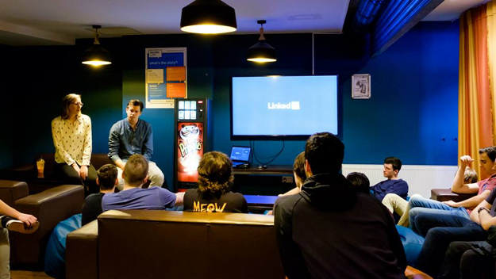
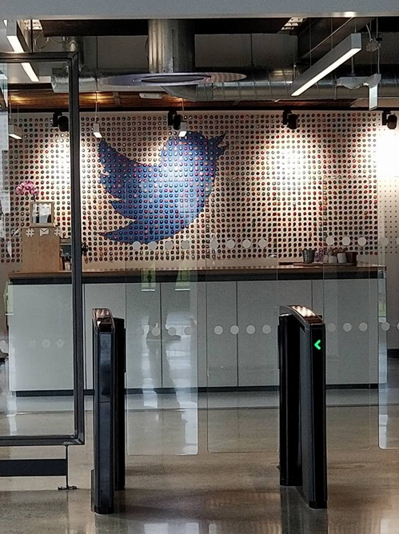

De bedoeling van de reis naar Dublin is om zo veel mogelijk bedrijven te bezoeken en uitleg krijgen over hoe zij werken. Mijn eigen doelstelling was om een internationale omgeving te verkennen.
Studiereis Dublin
De bedoeling van de reis naar Dublin is om zo veel mogelijk bedrijven te bezoeken en uitleg krijgen over hoe zij werken. Mijn eigen doelstelling was om een internationale omgeving te verkennen.
Doelstellingen
Verslag
De reis naar Dublin was voor mij een succes. Na aankomst op de luchthaven van Brussel zijn we vertrokken naar Dublin. Daarna zijn we met een bus naar een hostel gebracht. Hier werden ons kamers toegewezen en verteld dat we de rest van de dag de cultuur van Dublin mochten verkennen. De volgende morgen zouden we een seminarie krijgen van LinkedIn.
Aangezien we nog niet hadden gegeten zijn we dit eerst gaan doen. Daarna hebben we een wandeling gemaakt door Dublin. De lectoren hebben ons een van de uitgaansbuurten van de stad laten zien. Een van de bekendste cafés hier is de “Temple Bar”. Daarna mochten we de stad zelf verkennen. We zijn dus gaan kijken naar parken en monumenten.
De volgende morgen zijn we gestart met een seminarie van LinkedIn. Het was gepland om deze te voeren in het gebouw van LinkedIn maar door veiligheidsredenen was dit niet mogelijk. We hebben het seminarie dus gewoon in het hostel gekregen. Tijdens het seminarie werd ons uitgelegd waarom een LinkedIn profiel belangrijk is. Verder werd er ook ingegaan op het nut van veel connecties hebben en ook de kwaliteit van de connecties. Tijdens de vragenronde vroeg een student hoe je precies een baan kon krijgen bij een bedrijf als Google of LinkedIn. Het antwoord hierop was dat je naast een portie geluk ook het best al iemand kent die bij het bedrijf werkt. Dit verhoogt je kansen enorm. Hier kwam dus weer het belang van de juiste connecties naar boven. De seminarie wordt getoont op de onderstaande foto.

De volgende dag hebben we een rondleiding door Dublin gekregen. We hebben o.a. Google en Facebook bezocht. Omwille van veiligheidsredenen mochten we hier ook niet naar binnen. Er werd aangegeven dat als je een rondleiding wou in een van deze bedrijven, je dit moest regelen met iemand die hier al werkt. Na deze rondleiding hebben we weer de vrijheid gekregen om de stad te bekijken. We hebben dus weer veel monumenten bezocht waaronder de Trinity College. Ook ben ik nog naar Twitter geweest waar we jammer genoeg ook niet naar binnen mochten. Een foto hiervan is hier onder te vinden.

De volgende dagen hebben we zelf in mogen vullen. Er werd aangegeven dit zo leerzaam mogelijk te houden. We hebben dus nog geprobeerd een rondleiding bij Google te krijgen maar dit is helaas niet gelukt. De rest van de studiereis hebben we nog twee cultuurreizen door Ierland gemaakt. We hebben hier veel over de geschiedenis van Ierland geleerd en dat er toch wel veel oorlogen zijn gevochten. Ook kwam de relatie met het Verenigd Koninkrijk aan bod en hoe deze is geëvolueerd.
Toen de week om was zijn we weer met een bus naar het vliegveld vervoerd. Hier hebben we een vlucht terug naar Brussel genomen. Door weersomstandigheden is deze omgeleid en moesten we eerst in Maastricht bijtanken. Gelukkig zijn we daarna toch veilig in Brussel aangekomen om daarna te vertrekken naar huis. Hieronder een foto van de volledige groep bij aankomst in Brussel.
Reflectie
Deze activiteit omvatte een internationale studiereis naar Dublin. In het begin was het even moeilijk om te wennen aan het Iers Engels accent. Na een paar dagen wennen was dit gelukkig duidelijk. De reis zelf was zeer leuk. Ik heb veel geleerd over de Ierse cultuur. Ook heeft de reis enorm geholpen met mijn kennis van de Engelse taal. Deze ervaring is dan ook onvervangbaar. Aangezien ik nog nooit in een vliegtuig heb gezeten was het ook fijn om dit eens mee te mogen maken. Zo weet ik ook hoe dit allemaal moet als ik in de toekomst nog eens een vliegreis zou doen.
Een probleem dat iedereen wel had was dat het gros van de geplande activiteiten was afgelast. Hierdoor moesten we veel zelf plannen. De reis heeft dus ook mijn managende vaardigheden vergroot. In het begin was het een beetje moeilijk aangezien deze informatie uit de lucht kwam vallen, maar uiteindelijk hebben ik en een paar andere studenten zelf de rest van de dagen ingepland. Zo hebben we er toch nog een leuke en educatieve reis van kunnen maken.
Het seminarie van LinkedIn was verder ook zeer interessant. Hier werd benadrukt dat connecties de juiste deuren kunnen openen. Na de reis heb ik dan ook wat moeite gestoken in mijn LinkedIn profiel door verschillende mensen toe te voegen. Ik heb deze opdracht gekozen voor mijn portfolio zodat ik kan laten zien dat ik de Engelse taal machtig ben. Verder is een internationale ervaring ook altijd handig.